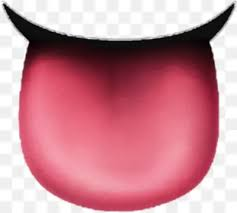

Vortrox is a notable YouTuber and content creator within the Geometry Dash community, known for his high-level gameplay, insightful commentary, and involvement in the game's culture. As a player, Vortrox has distinguished himself by completing numerous difficult and extreme demons, which are levels that rank among the most challenging in the game. His ability to tackle such complex levels has earned him respect among top players and fans alike. Vortrox's content typically revolves around showcasing his gameplay of hard and extreme demons. He frequently uploads videos where he completes these difficult levels, providing viewers with a mix of entertainment and awe as they watch him conquer some of the most intense challenges Geometry Dash has to offer. His gameplay videos often feature replays of him beating levels with occasional commentary, either discussing his experience with the level or offering tips for others who may want to attempt them. In addition to demon completions, Vortrox has made videos reviewing levels, discussing the state of the game, and interacting with the broader Geometry Dash community. This variety allows him to engage with different aspects of the game, appealing to a wide audience—from those interested in high-skill gameplay to players looking for more casual and insightful content. Vortrox is widely regarded for his impressive skill in Geometry Dash, especially his consistency in beating extreme demons, which require immense precision, muscle memory, and patience. His ability to stay calm under pressure during intense parts of these levels has contributed to his success. Levels that many players would find impossible, Vortrox takes on with relative ease, cementing his reputation as a highly skilled player. He also showcases his progress on extremely difficult levels over time, allowing his viewers to follow his journey through numerous attempts and failures before finally achieving completion. This transparency in his process resonates with fans, as they can see the dedication and perseverance required to overcome such challenges. Vortrox has gained significant influence within the Geometry Dash community, not only through his gameplay but also through his interactions with other players and creators. His videos often spark discussions about level design, difficulty balancing, and the overall trajectory of the game. Additionally, his completions of difficult levels often lead to greater recognition of those levels, contributing to their placement on the game's "Demon List," which ranks the hardest levels ever created. He also occasionally collaborates with other prominent Geometry Dash YouTubers and creators, helping to elevate the content and visibility of the community as a whole. These collaborations strengthen his connection with the community, as his fans enjoy seeing interactions between their favorite creators. Contributions to the Game. Beyond his own gameplay, Vortrox has also had an impact on the game’s culture. By consistently uploading content, participating in challenges, and collaborating with others, he helps keep the Geometry Dash community active and engaged. His encouragement of fair play and perseverance is seen as positive influence on the community. He often highlights the importance of persistence, motivating others to push their limits, whether they are attempting their first demon or their hundredth. Furthermore, his content serves as a valuable resource for players who are trying to improve their skills. Vortrox’s gameplay videos provide insights into strategies for completing difficult levels, and his commentary often includes tips and tricks that can help viewers navigate complex sequences of jumps and obstacles. As a long-standing member of the Geometry Dash YouTube scene, Vortrox has built a legacy that will likely continue even as the game evolves. His videos have amassed a large number of views, and his subscriber count reflects the loyal following he has built over time. Vortrox's persistence in tackling the hardest levels and sharing his experiences has cemented his place as a respected figure in the Geometry Dash community. In summary, Vortrox is a highly skilled Geometry Dash player and YouTuber who has made a significant impact on the game’s community. His content, focused on extreme demon completions and community engagement, has not only entertained viewers but also inspired many to push their limits in the game. As one of the game’s elite players and content creators, Vortrox has left an indelible mark on the Geometry Dash scene, influencing both current players and future generations of enthusiasts.
HOW THE FUCK DOES VORTROX DO THAT WITH HIS FACE?
